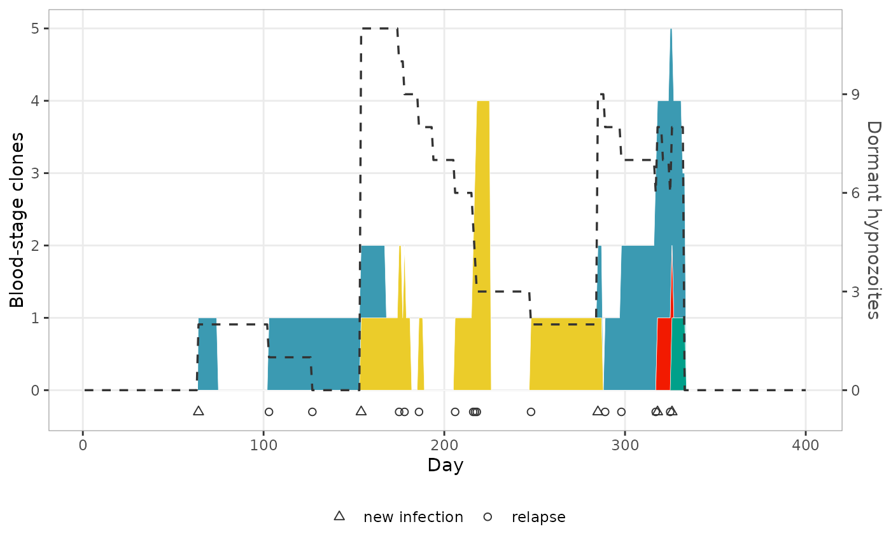

layout = "lineages" (the default) stacks the host's blood-stage clones, a colour for each
lineage, so you can see which genotypes are present at any moment, when a lineage clears and
when the same one returns. A band is as tall as its lineage's clones, so a relapse into a patent
clone of the same lineage stacks on it; the COI, which counts distinct lineages, is the number of
bands. A dashed line counts the host's dormant hypnozoites, of every lineage, on a second axis.
layout = "summary" plots the active COI and the dormant hypnozoites as two lines instead. Each clone is
drawn from episodes(): from its onset to its end, and to the last day of the state table if it
was still patent when the run ended. The x axis runs to SIM_DAYS; on a run that went extinct the
lines end where state.tsv does.
Arguments
- run
a run: a
vivax_run(fromrun_sim()orload_run()) or the path of a run directory.- host_id
the host, one whole number (a run's hosts are 0 to
N_HOSTS - 1).- layout
"lineages"(each lineage's clones, stacked) or"summary"(lines for the COI and the dormant hypnozoites).- palette
colours cycled across lineages.
Examples
run <- example_run()
n <- load_events(run)[event_type == "hypnozoite_activation", .N, by = human_id]
plot_host_trajectory(run, n$human_id[which.max(n$N)]) # the host with the most relapses
